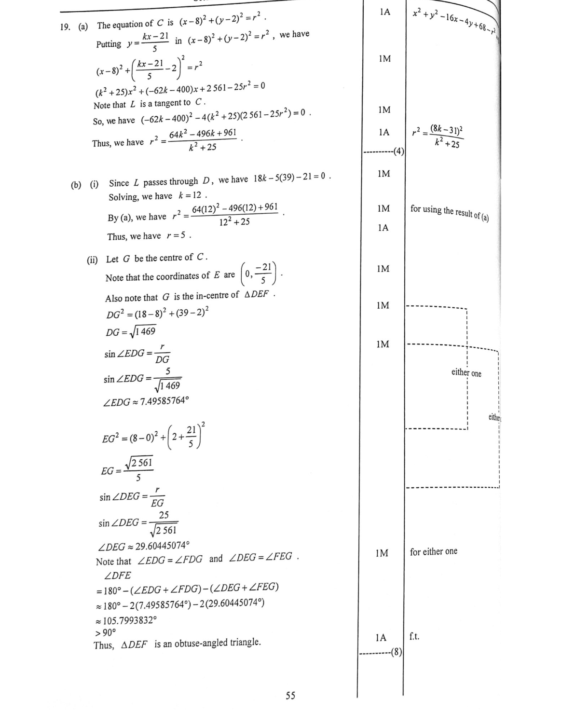

2018 DSE 數學 P1 Q19 答案＋詳解
題目（中文卷）
圓 $C$ 的圓心的坐標為 $(8,2)$。將 $C$ 的半徑記為 $r$。設 $L$ 為直線 $kx-5y-21=0$，其中 $k$ 為一常數。已知 $L$ 為 $C$ 的切線。
(a) 求 $C$ 的方程，答案以 $r$ 表示。由此，以 $k$ 表 $r^2$。（4 分）
(b) $L$ 通過點 $D(18,39)$。
(i) 求 $r$。
(ii) 已知 $L$ 與 $y$ 軸相交於點 $E$。設 $F$ 為一點使得 $C$ 為 $\Delta DEF$ 的內切圓。$\Delta DEF$ 是否一鈍角三角形？試解釋你的答案。（8 分）
試卷完 —
English version（英文卷題目）
- The coordinates of the centre of the circle $C$ are $(8,2)$ . Denote the radius of $C$ by $r$ . Let $L$ be the straight line $kx-5y-21=0$ , where $k$ is a constant. It is given that $L$ is a tangent to $C$ .
(a) Find the equation of $C$ in terms of $r$ . Hence, express $r^{2}$ in terms of $k$ . (4 marks)
(b) $L$ passes through the point $D(18,39)$ . (i) Find $r$ . (ii) It is given that $L$ cuts the $y$-axis at the point $E$ . Let $F$ be a point such that $C$ is the inscribed circle of $\Delta DEF$ . Is $\Delta DEF$ an obtuse-angled triangle? Explain your answer. (8 marks)
End of paper.
Built by DSE Visual Tutor: source PDF → page-by-page transcription → tagging → matplotlib figure redraw → Markdown. For study reference only; copyright belongs to HKEAA.
官方評卷參考（Marking Scheme）

考評報告
平平。只有部分考生能以r表C的方程。很多考生誤以為C的圓心在L上。平平。很多考生雖然能求得k的值,但他們未能求得r的值。甚差。大部分考生於解釋為什麼△DEF是一鈍角三角形時出現困難。